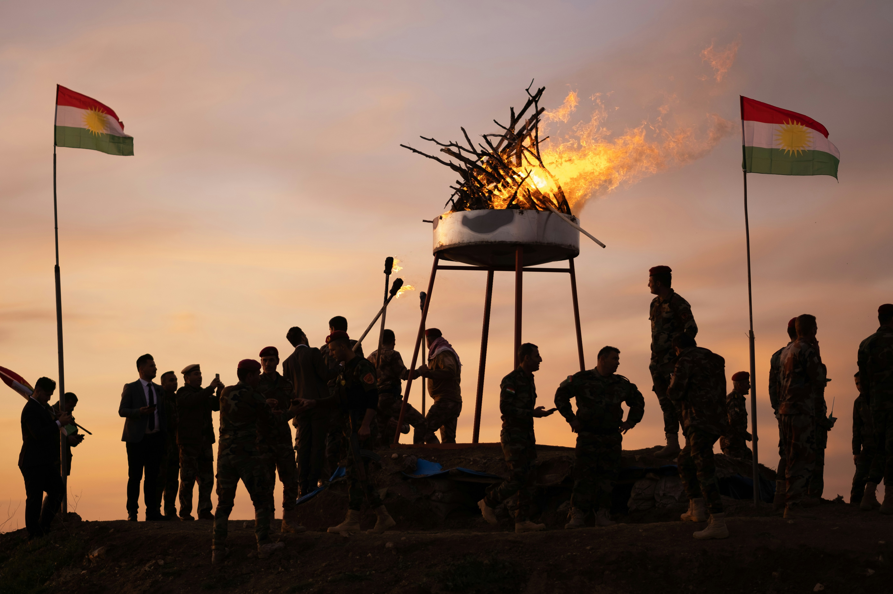

01
Sufism and Islamic Intellectual History
My research examines the formation of Islamic intellectual traditions, with particular attention to Sufism, theology, religious authority, and the transmission of knowledge across the medieval Middle East.
02
Islam and Politics in the Modern Middle East
I study the relationship between Islam, sovereignty, and political authority, focusing on modern Islamic movements, state formation, and competing visions of Islamic governance.

03
Coloniality, Nationalism, and Religion
My work explores the intersections of coloniality, nationalism, and religion, with particular attention to identity and knowledge production in Kurdistan.